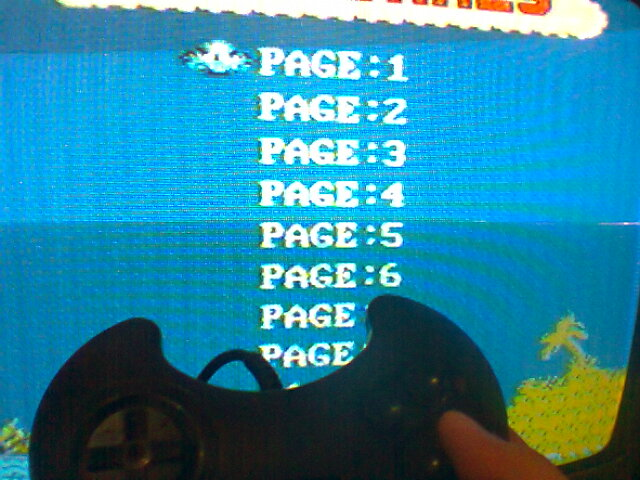
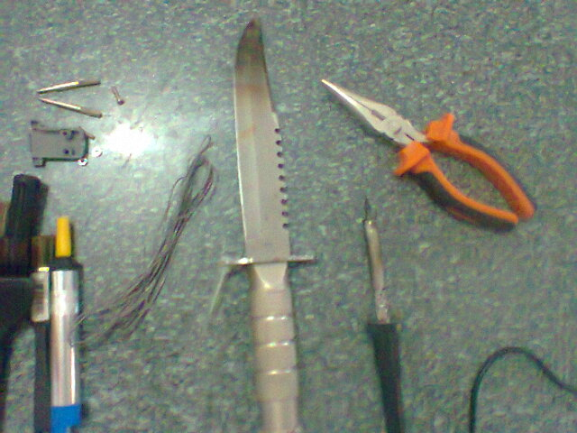
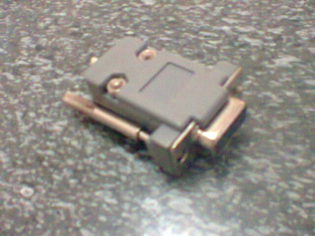

Turbo Game - Consertando um controle
:::. Por Valneimaia - O Valnei publicou lá no Trombone um artigo bem legal mostrando o que ele fez para dar um jeito no controle de seu TurboGame que não estava mais funcionando. Gentilmente ele permitiu que o artigo fosse publicado aqui no site. Apenas me atrevi a corrigir algumas palavrinhas, dá uma melhorada no texto e publicar hehe. Confiram!
___________________________________________________________________________
Sabe quando você desetenrra aquele controle láa do fundo de uma gaveta e nem sabe o estado o dele? Aí você liga ele no video game e...

NADA! Ele não funciona! Aperta e aperta e não sai do canto! Então você tenta de tudo e mesmo assim não dá em nada, você acaba achando que o defeito esta no console, mas nem sempre o problema está lá...
Muitas vezes pode ser os pinos do conector do controle que já estão bem acabados com o tempo. Aqui irei mostrar como eu fiz em um controle de Turbo Game para ele voltar a funcionar. Bem, antes de tudo tenha as seguintes ferramentas, especialmente uma faca do Rambo!

O conector DB9 você encontra em qualquer loja de eletrônicos, não chega a passar de 3 Reais, e no meu caso peguei de um computador velho mas bem velho mesmo!

Você usa a faca do Rambo agora pra cortar o conector antigo. Você pode esquentar a faca para facilitar o corte. Isso se faz necessário para observar onde você deverá soldar os fios do cabo do controle no novo conector. Depois de cortar, se preferir, pegue um papel e anote onde vai cada fio, você pode também tirar uma foto antes de cortar os fios do conector velho.
Tá com o ferro de solda quente? Essa é a hora de usá-lo. Pegue os dois conectores, o velho e o novo, coloque-os lado a lado e vá soldando os fios do cabo no novo conector, observando para soldar os fios nos locais certos, conforme estavam no conector antigo:
Depois de tudo pronto, é só encaixar o novo conector no video game, e ver se deu certo...
Eureka! E mais um controle volta a vida! Sem duvidas ele com esse conector ai ficou show e bastante charmoso (pelo menos na minha opnião hehe )! Sem contar que esses controles de turbo game parecem até um rostinho...
)! Sem contar que esses controles de turbo game parecem até um rostinho...
Outro jeito simples para recuperar-lo é pegar um pedaço de metal bem fino e raspar a ferrugem dentro de cima dos conectores do controle, em alguns casos dá certo mas em outros só substituindo mesmo.